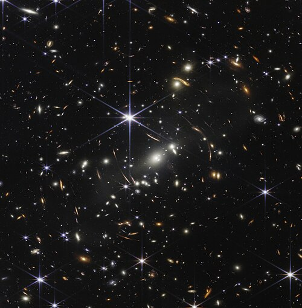

What Is Space?

Outer space (or simply space) is the expanse that exists beyond Earth's atmosphere and between celestial bodies.[1] It contains ultra-low levels of particle densities, constituting a near-perfect vacuum[2] of predominantly hydrogen and helium plasma, permeated by electromagnetic radiation, cosmic rays, neutrinos, magnetic fields and dust. The baseline temperature of outer space, as set by the background radiation from the Big Bang, is 2.7 kelvins (−270 °C; −455 °F).
The plasma between galaxies is thought to account for about half of the baryonic (ordinary) matter in the universe, having a number density of less than one hydrogen atom per cubic metre and a kinetic temperature of millions of kelvins.[4] Local concentrations of matter have condensed into stars and galaxies. Intergalactic space takes up most of the volume of the universe, but even galaxies and star systems consist almost entirely of empty space. Most of the remaining mass-energy in the observable universe is made up of an unknown form, dubbed dark matter and dark
Outer space does not begin at a definite altitude above Earth's surface. The Kármán line, an altitude of 100 km (62 mi) above sea level,[8][9] is conventionally used as the start of outer space in space treaties and for aerospace records keeping. Certain portions of the upper stratosphere and the mesosphere are sometimes referred to as "near space". The framework for international space law was established by the Outer Space Treaty, which entered into force on 10 October 1967. This treaty precludes any claims of national sovereignty and permits all states to freely explore outer space. Despite the drafting of UN resolutions for the peaceful uses of outer space, anti-satellite weapons have been tested in Earth orbit.
The concept that the space between the Earth and the Moon must be a vacuum was first proposed in the 17th century after scientists discovered that air pressure decreased with altitude. The immense scale of outer space was grasped in the 20th century when the distance to the Andromeda Galaxy was first measured. Humans began the physical exploration of space later in the same century with the advent of high-altitude balloon flights. This was followed by crewed rocket flights and, then, crewed Earth orbit, first achieved by Yuri Gagarin of the Soviet Union in 1961. The economic cost of putting objects, including humans, into space is very high, limiting human spaceflight to low Earth orbit and the Moon.
On the other hand, uncrewed spacecraft have reached all of the known planets in the Solar System. Outer space represents a challenging environment for human exploration because of the hazards of vacuum and radiation. Microgravity has a negative effect on human physiology that causes both muscle atrophy and bone loss.